Marcadores atualizados: quadrados e círculos geométricos normais, conforme solicitado. Veja o antes/depois. Todos os casos 1 a 16 foram aprovados em 16/11/2026. Aceite com hashes e histórico.
MATLAB acima; Python abaixo. Mesmas coordenadas nos dois PNGs, sem alinhamento ou alteração. Clique para abrir os pixels originais. As notas pertencem aos recortes quantitativos; a prancha inclui contexto maior para mostrar eventuais deslocamentos.
O que avaliar: fonte, espaçamento, tamanho dos símbolos e posição das molduras. Na legenda Graphs (caso 16), as cores dos pequenos traços também diferem; os quadrados continuam identificando corretamente os dois pontos.
Caso 12: a mudança de μ/σ no ajuste lognormal de segmentos decorre da correção científica Q15 já aprovada. Essa diferença numérica não é uma nova proposta; aqui se avalia a apresentação da caixa.
SSIM: 0.883156; referência 0,98.
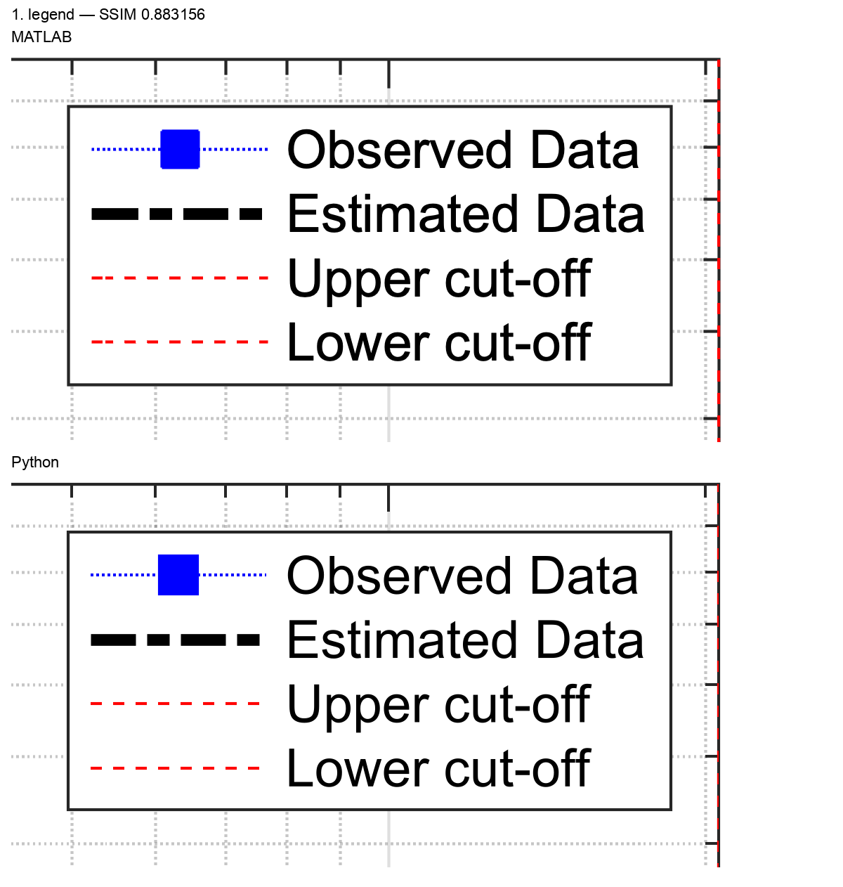
SSIM: 0.901866; referência 0,98.
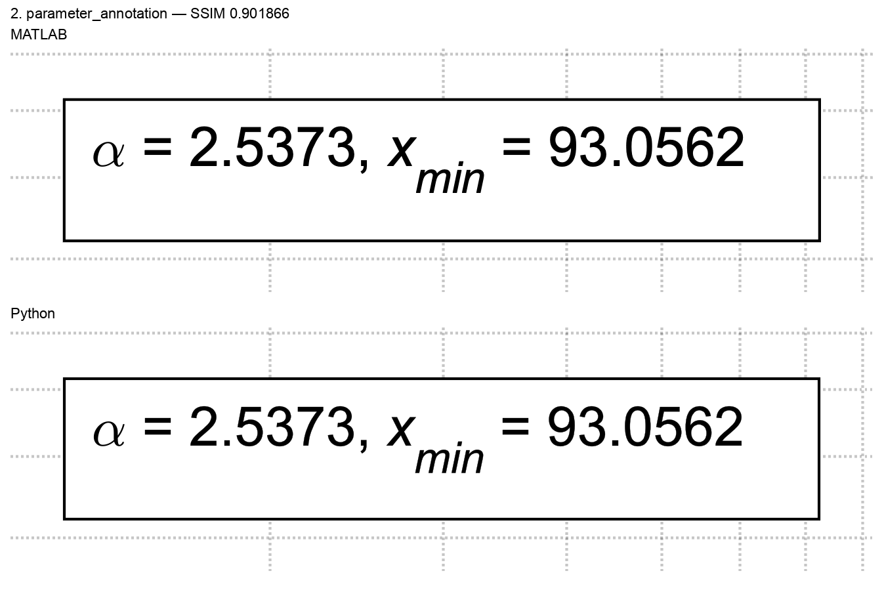
SSIM: 0.883849; referência 0,98.
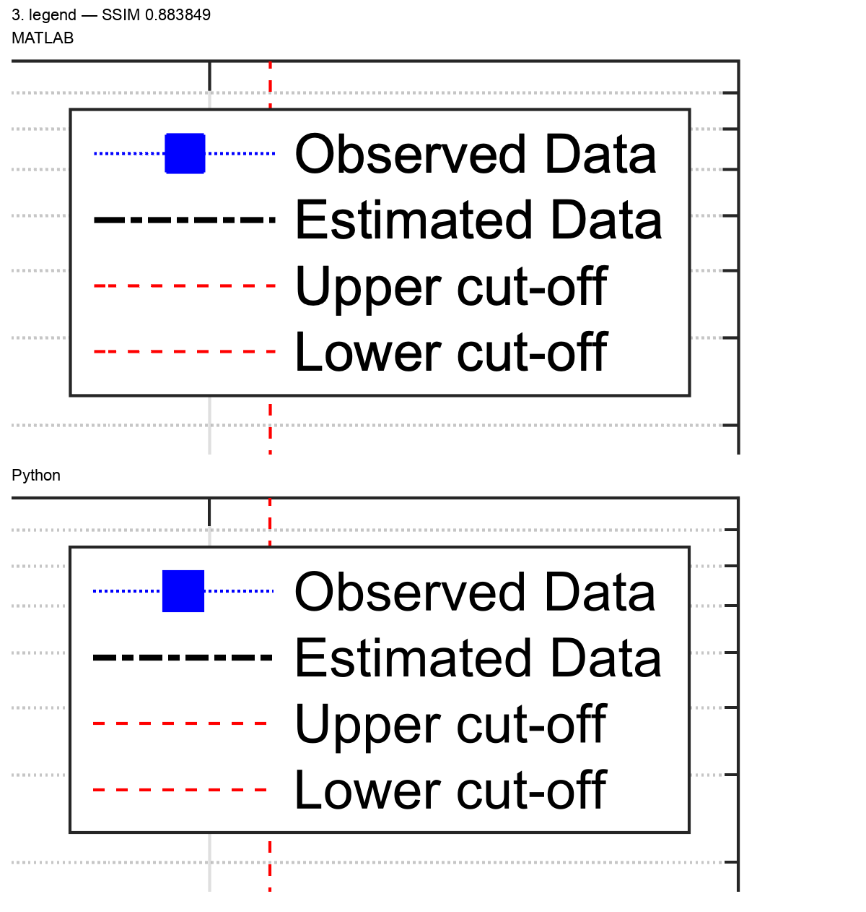
SSIM: 0.901605; referência 0,98.
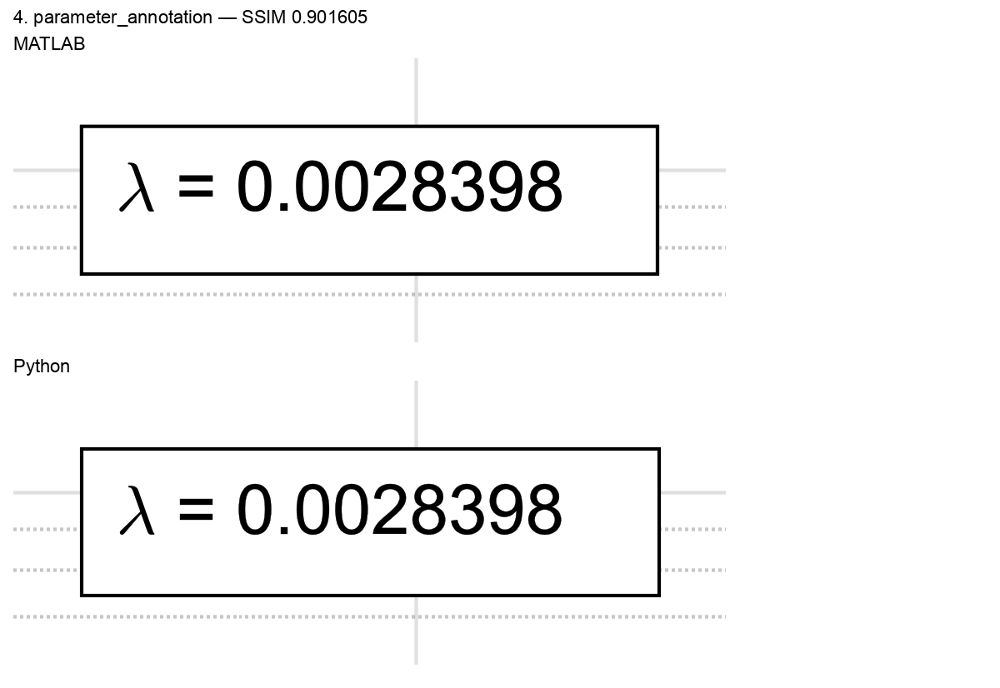
SSIM: 0.883072; referência 0,98.
SSIM: 0.906285; referência 0,98.
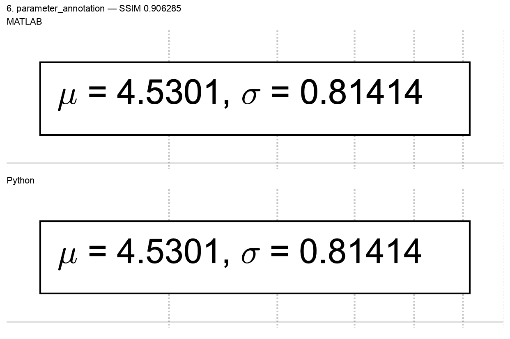
SSIM: 0.878850; referência 0,98.
SSIM: 0.908318; referência 0,98.
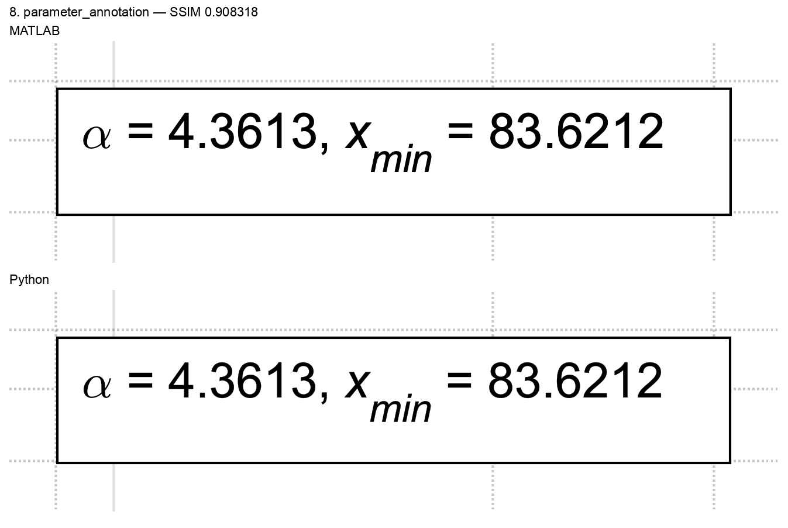
SSIM: 0.883879; referência 0,98.
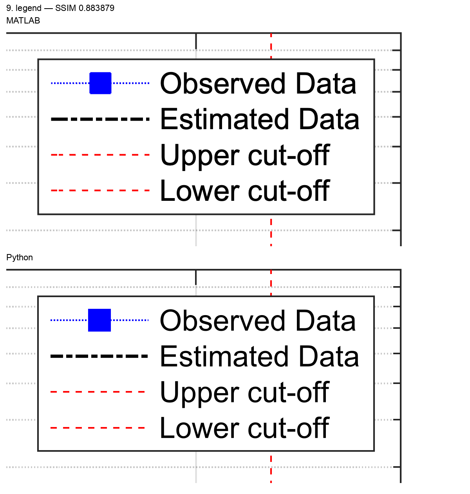
SSIM: 0.906729; referência 0,98.
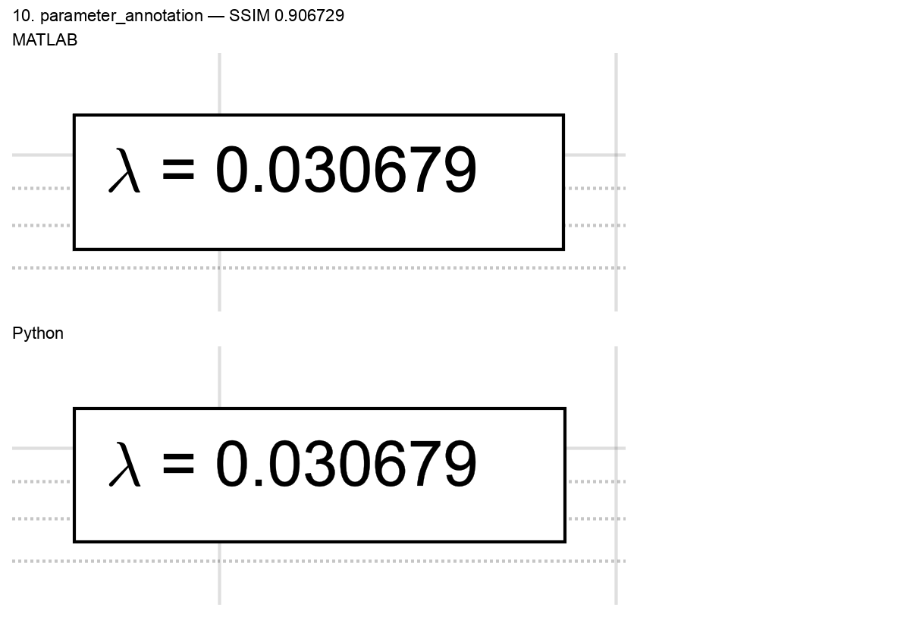
SSIM: 0.883181; referência 0,98.
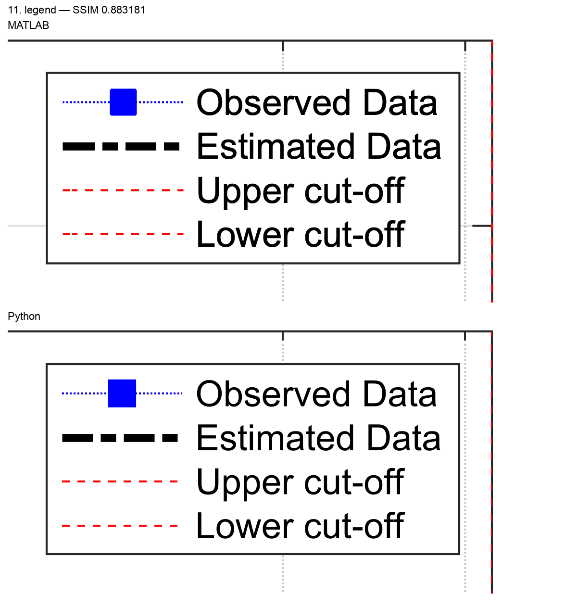
SSIM: 0.852823; referência 0,98.
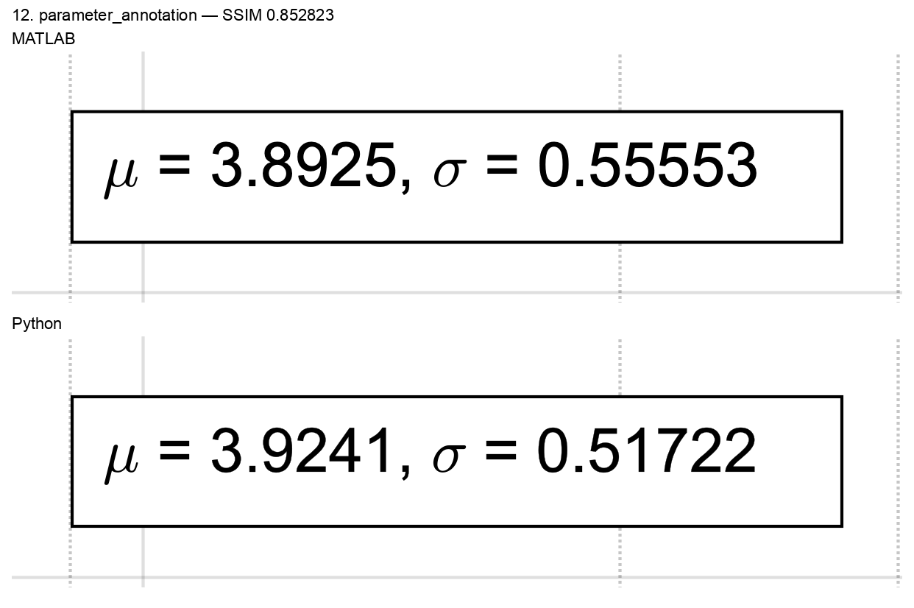
SSIM: 0.834659; referência 0,98.
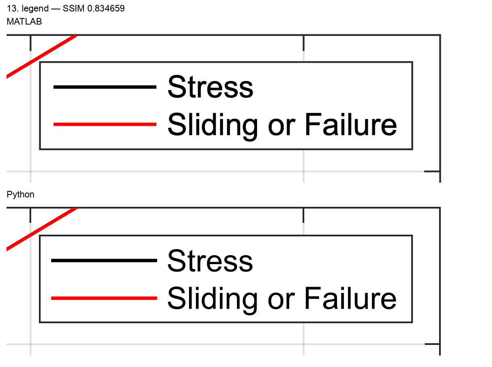
SSIM: 0.791923; referência 0,98.
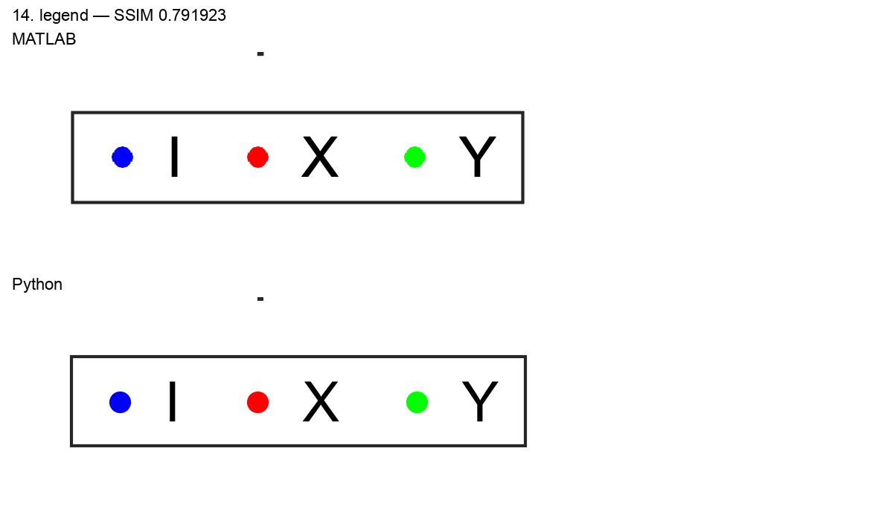
SSIM: 0.653303; referência 0,98.
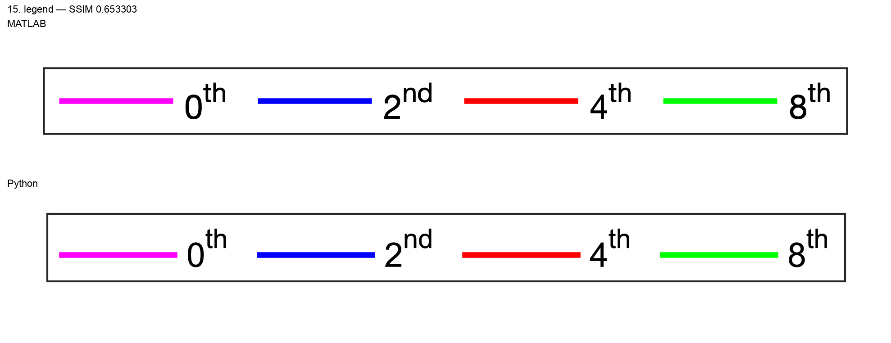
SSIM: 0.795514; referência 0,98.
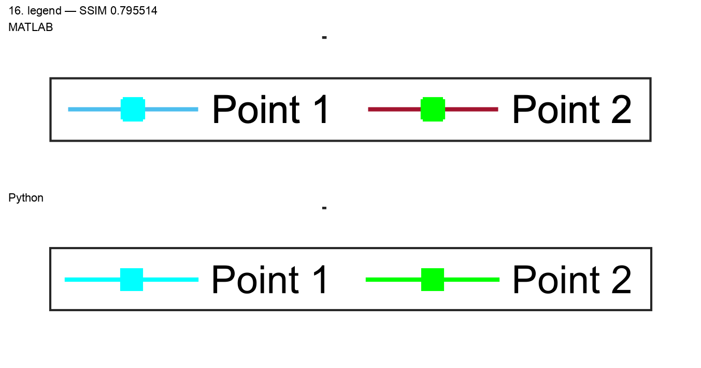